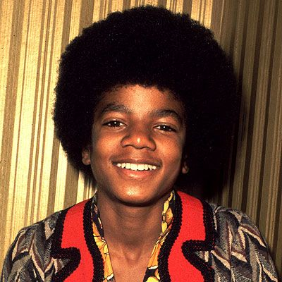

O oitavo filho da família Jackson, Michael fez sua estreia profissional em 1964, com seus irmãos mais velhos, Jackie, Tito, Jermaine e Marlon, como membro do grupo musical The Jackson 5 (inicialmente o conjunto chamava Jackson Brothers), como Michael era o caçula, ficou conhecido como Little Michael. Ele iniciou sua carreira solo em 1971, na Motown Records, e subiu para estrelato solo com Off the Wall (1979), que foi aclamado pela crítica.
Michael Jackson: O "Rei do Pop"
Por Beatriz Cavalheiro e Camila Nascimento

Michael Joseph Jackson (Gary, 29 de agosto de 1958 – Los Angeles, 25 de junho de 2009) foi um cantor, compositor e dançarino estadunidense. Filho de Joseph, mais conhecido como Joe, e Katherine Jackson, o cantor foi o sétimo dos nove filhos do casal. Seus irmãos chamam-se Jackie, Tito, Jermaine, Marlon, Randy, Rebbie, La Toya e Janet. O pai de Michael Jackson trabalhava em uma usina siderúrgica, mas, nas horas vagas, tocava guitarra e era empresário musical sem sucesso. Katherine era testemunha de Jeová e tocava piano na igreja.
Apelidado de "Rei do Pop", foi um dos ícones culturais mais importantes e influentes de todos os tempos e um dos maiores artistas da história da música. Suas contribuições para a música, a dança e a moda por mais de quatro décadas, juntamente com a divulgação de sua vida pessoal, fizeram dele uma figura global na cultura popular.

Vida Pessoal
Em 1994, o Rei do Pop casou-se com Lisa Marie Presley (a filha do Rei do Rock Elvis Presley), mas dois anos depois já estavam separados. No dia 13 de novembro de 1996, Michael Jackson se casou com Debbie Rowe, uma enfermeira da clinica do seu dermatologista.
Michael teve seu primeiro filho em 1997, Prince Michael Jackson, e em 1998 nasceu Paris Michael Katherine Jackson. Em 1999 o casal se separou e, como havia feito um contrato pré nupcial, ficou estabelecido que o cantor ficaria com a guarda das crianças. Em 2002, nasceu o seu terceiro filho, Prince Michael Jackson II, mais conhecido pelos fãs de Michael Jackson como “Blanket”, fruto de inseminação artificial. A mãe da criança foi mantida no anonimato.

Morte
Durante a preparação da turnê This Is It, o rei do pop morreu em 25 de junho de 2009. Segundo o Departamento de Medicina Legal de Los Angeles, a causa da morte foi overdose de medicamentos. Michael injetou alta dose de Propofol, um anestésico, combinado com remédios para ansiedade e insônia.
O médico Conrad Murray foi condenado por homicídio culposo, sem intenção de matar, por ter dado os medicamentos para Michael. Murray ficou preso por dois anos."